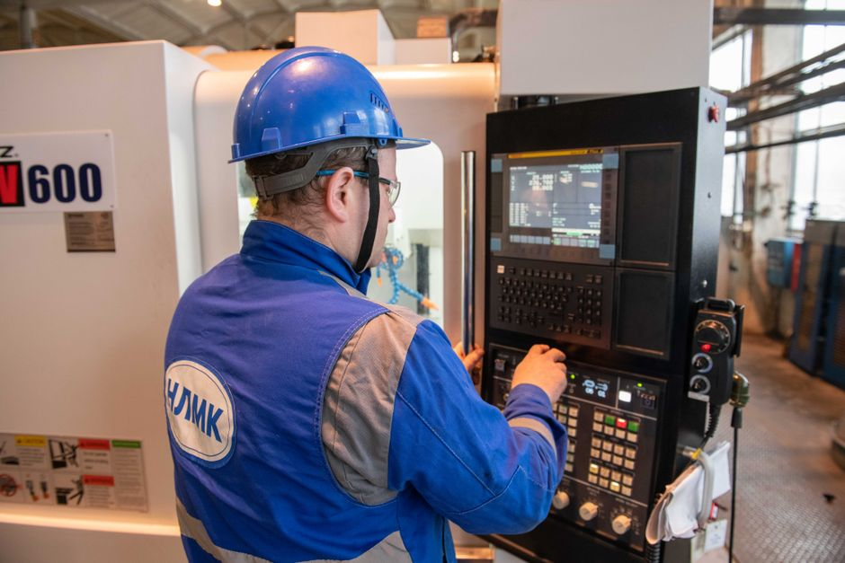

[조달가이드 5호] 중소기업자간 경쟁제품 — 대기업이 못 들어오는 616개 품명, 우리 같은 공장이 독식하는 판

나라장터에서 1인 제조사업자가 가장 먼저 하는 실수는 "우리 공장 규모가 작아서 공공입찰은 무리"라고 단정하는 것입니다. 그런데 공공기관이 사는 물품 가운데 애초에 중소기업만 입찰에 참가할 수 있게 막아둔 품목이 있습니다. 중소기업자간 경쟁제품입니다. 2025년부터 2027년까지 3년간 지정된 품목은 610개, 2026년 현재 공공구매종합정보망에 실제 올라 있는 세부품명은 616개입니다. 이 품목은 대기업·중견기업이 들어올 수 없고, 직접생산 설비만 갖춘 중소기업끼리 경쟁합니다. 2023년 기준 이 시장의 연간 거래는 28조 원, 중소기업 제품 공공구매액의 22%입니다. 판은 이미 큰데, 1인 사업자가 못 들어가는 이유는 단 하나 — 직접생산확인증명서가 없어서입니다. 이 글은 그 증명서 한 장으로 열리는 판의 구조, 자격, 발급 절차, 그리고 거르는 지점을 순서대로 정리합니다.
30초 요약
| 항목 | 내용 |
|---|---|
| 무엇 | 공공기관이 반드시 중소기업에게서만, 그것도 직접 생산하는 중소기업에게서만 사야 하는 품목 (물품·용역·공사) |
| 규모 | 2025~2027년 지정 610개 품목, 2026년 목록 616개 세부품명. 2023년 기준 구매액 28조 원 (중기부 제품 공공구매의 22%) |
| 누가 | 경쟁제품을 직접 생산·제공할 설비를 갖춘 중소기업자. 조합은 조합원 2분의 1 이상이 같은 요건을 갖춰야 참여 |
| 핵심 증빙 | 직접생산확인증명서 — 공공구매종합정보망(SMPP)에서 신청, 방문 실태조사 후 발급, 유효기간 2년 |
| 비용 | 소상공인·소기업은 창업 후 최초 신청 무료, 2회차 이후 18만 원(제품 1개 기준, 추가 1개당 5만 원). 중기업 20만 원 |
| 계약 방식 | 직접생산확인 보유 중소기업 간 제한·지명경쟁 + 계약이행능력심사(종합평점 88점 이상 낙찰) |
| 비슷하지만 다른 판 | 조달청 '벤처나라'는 신규 벤처·창업기업 전용 쇼핑몰(2호 창구). 경쟁제품은 회사 연차와 무관하게 설비만 있으면 열리는 판 |
1. 누가 참여할 수 있나 — '설비' 두 글자가 전부
경쟁입찰 참여자격은 단 두 가지입니다. 첫째, 그 경쟁제품을 직접 생산·제공할 수 있는 설비. 둘째, 계약법령이 정하는 기본적인 계약 참가자격(국세·지방세 체납 없음, 참가자격 제한 처분 사실 없음 등). 매출 규모나 경력 연수는 요건에 없습니다. 공장이 임차라도 — 임차 공장이면 해당 장소에서 다른 업체와 같이 쓰는 형태가 아니어야 하고, 500제곱미터 미만 소기업이 공장을 등록하지 않은 경우엔 건축물대장 용도(공장 또는 제1·2종 근린생활시설)까지 확인받는 식으로 세부 기준이 내려갑니다.
조합(협동조합)으로 참여하려면 문턱이 올라갑니다. 조합원 2분의 1 이상이 위 요건을 갖춘 중소기업자일 것, 품질관리·사후관리 기준을 운영할 것, 정관에 경쟁입찰 참여 허용을 명시할 것, 공공구매 관련 교육을 연 10시간 이상 이수한 상근임직원 2명 이상, 그리고 해당 제품 시장에서 조합 점유율 50% 이하(레미콘·아스콘은 광역권역 45% 이하) 같은 조건을 동시에 맞춰야 합니다. 1인 사업자에겐 조합보다 직접 참여가 정답인 이유입니다.
2. 어떤 품목이 있나 — 616개 세부품명에서 내 공장을 찾는다
지정 내역은 공공구매종합정보망의 경쟁제품 목록에서 연도·산업군·제품명으로 검색하고 엑셀로도 내려받을 수 있습니다. 품목은 조달청 물품분류의 세부품명(10자리) 단위로 걸립니다.
| 산업군 | 예시 세부품명 |
|---|---|
| 기계·장비 | 3차원프린터, 쟁기·동력분무기 등 농기계, 음식물쓰레기처리기, 물탱크·빗물저장탱크, 벨트컨베이어 |
| 건설자재 | 방부목, 화강석·조경석·잡석, 활성탄, 폴리에틸렌필름 |
| 종이·인쇄 | 프린트및복사용지, 공책·수첩, 표, 일반행정공통서식 |
| 전기·조명 | 스마트LED다운라이트를 비롯한 스마트조명 설비, 보안용카메라 |
| 식품 | 소시지류·햄류·불고기패티 등 식육가공품 |
| 가구 | 소파·책장·침대·장롱·사물함·캐비닛 |
품목에는 특이사항이 붙습니다. 예컨대 화강석·조경석은 '국가유산수리용은 제외', 드론은 '25kg·고도 150m 초과 무인비행장치 제외', 동력분무기는 '배부식·견착식 제외'처럼 범위 제한이 걸려 있습니다. 내 제품이 이 세부품명의 특이사항 안에 들어오는지 먼저 대조해야 합니다. 2025~2027년 지정에서는 원격단말장치, 전기자동차용충전장치(50kW 이하), 상업용전기레인지 등 14개가 새로 들어왔고 9개는 빠졌습니다. 지정은 3년마다 다시 열리니 우리 품목이 아직 없다면 중소기업중앙회에 지정 신청을 넣는 경로도 있습니다(국내 생산 중소기업 10개 이상, 공공기관 전년도 구매실적 10억 원 이상이 추천 요건).
3. 왜 '직접생산'을 요구하나
제도의 취지는 분명합니다. 공공기관이 중소기업 전용 판을 열어줬는데 그 낙찰자가 다른 공장에서 만든 완제품에 자기 상표만 붙여 되팔린다면 취지가 무색해지니까요. 그래서 공공기관은 경쟁제품을 중소기업자간 경쟁 방식, 또는 1천만 원 이상의 수의계약으로 계약할 때 해당 기업의 직접생산 여부를 확인해야 하고, 그 확인이 곧 직접생산확인증명서입니다. 하청생산이나 완제품에 타사 상표를 붙여 납품하다 적발되면 전 품목 6개월 신청 제한에 과징금까지 붙습니다. 거짓 발급이면 1년 제한입니다.
4. 직접생산확인증명서 — 신청부터 발급까지
- SMPP 중소기업 회원가입 + 기업정보 등록 — 일반정보, 생산공장정보, 제품정보(세부품명번호로 검색해 등록). 등록 가능한 제품은 경쟁제품 목록에 있는 것뿐입니다.
- 직접생산확인 신청 — 공장별 신청. 생산공장이 여러 개면 확인이 필요한 공장만.
- 수수료 납부 — 서류심사 완료 후 나오는 가상계좌 또는 카드. 소상공인·소기업은 창업 후 최초 신청이면 전액 면제, 이후 18만 원(제품 추가 1개당 5만 원), 중기업 20만 원. 세부품명 여러 개라도 같은 '제품명' 그룹이면 1개 계산입니다(신문·교재·서적·정기간행물 4종 = 인쇄물 1개 = 18만 원). 여러 제품을 한 번에 신청해야 수수료가 줄어듭니다.
- 방문 실태조사 — 실태조사원이 공장을 찾아 확인기준 충족 여부를 봅니다. 사업자등록증상의 업종과 제품 관련업종이 일치해야 하고, 공장등록 여부와 임차 여부까지 서류로 대조됩니다.
- 검토·승인 → 증명서 발급 — 한국중소벤처기업유통원 승인. 유효기간은 승인일로부터 2년. 만료 30일 이내 재신청이면 만료일 다음 날부터 다시 2년이라 갱신이 끊기지 않습니다.
서비스업 종사자에게 특히 중요한 소식: 현장 실태조사를 생략하는 품목이 정해져 있습니다. 건물청소서비스, 통근·통학운송, 측량용역, 패키지소프트웨어 개발·도입, 정보시스템 개발·유지관리, 디자인서비스, 축제·행사 기획대행, 정수기 같은 품목이 대표적이고, 이런 품목은 제품당 5만 원만 내면 됩니다. 용역·서비스로 공공 납품을 노린다면 제조업이 아니어도 길이 있다는 뜻입니다.
5. 계약까지는 어떻게 진행되나
- 나라장터 입찰참가자격 등록이 먼저입니다. 여기에 없는 상태면 공고가 보여도 투찰할 수 없습니다.
- 경쟁제품 입찰은 직접생산확인을 가진 중소기업끼리 제한·지명경쟁으로 붙고, 낙찰자는 계약이행능력심사로 정합니다. 추정가격 10억 원 이상 / 고시금액 이상~10억 미만 / 고시금액 미만으로 배점 기준이 3단계로 나뉘고, 종합평점 88점 이상이 낙찰 기준입니다.
- 심사 서류 중 직접생산확인서·중소기업(소상공인)확인서·여성·장애인·벤처기업확인서 등은 공공구매종합정보망에 이미 등재돼 있으면 계약담당자가 직접 확인하고 기업에 제출을 요구할 수 없습니다. 창구만 열어두면 서류는 심사 단계에서 자동으로 잡힙니다.
- 증명서가 없으면 계약의 시작 자체가 막힙니다. 경쟁제품 계약은 직접생산확인을 한 중소기업과만 할 수 있고, 1천만 원 미만 소액 수의가 아닌 한 예외가 없습니다.
6. 거르는 지점과 그 다음 수
- 세부품명 불일치 — "우리 제품도 비슷하니 되겠지"로 등록하면 반려됩니다. 제품명과 특이사항 범위까지 조달청 분류로 대조하세요.
- 공장 서류 — 사업자등록증명·공장등록증명은 90일 이내 발급본만 유효하고, 사업자등록증이나 열람용 서류는 제출서류로 인정되지 않습니다.
- 공장 이전 방치 — 이전한 날부터 30일 안에 기존 증명서를 반납하고 재신청해야 합니다. 안 하면 해당 제품 확인 취소에 3개월 신청 제한.
- 대표자 변경·사업 양수도 — 개인사업자 대표자 변경, 양도·양수·합병도 반납 대상입니다. 새 기업으로 회원가입 후 다시 신청해야 합니다.
- 품명 재신청 주기 — 증명은 2년, 지정 내역은 3년 주기입니다. 2027년 말로 2025~2027 지정이 끝나면 새 지정 내역에서 우리 품명이 유지되는지 반드시 다시 확인해야 합니다.
- 공사판은 다른 규칙 — 경쟁제품은 물품이 중심이고, 공사는 공사용자재 직접구매라는 별도 레이어가 있습니다. 종합공사 40억 원 이상, 전문공사 3억 원 이상 공사 안에서 직접구매 대상품목의 추정가격이 4천만 원 이상이면 그 자재를 발주기관이 중소기업으로부터 분리 발주합니다. 제조업자가 건설사 하청이 아니라 발주기관이 제조사와 직접 계약할 수 있는 조항입니다.
- 중소기업 확인서 만료 — 참여자격의 기본 서류인데 유효기간은 원칙적으로 직전 사업연도 말일부터 3개월이 지난 날부터 1년입니다(12월 결산이면 4월 1일~이듬해 3월 31일). 10억 원대 입찰 앞에 섰는데 확인서가 작년 것이면 발목 잡힙니다. 중소기업현황정보시스템에서 무료로 갱신하시면 됩니다.
바로 가기
같이 읽기
- 우리 제품이 몇 원짜리 판에 끼는지 먼저 확인 — 금액별 참가자격·계약방식
- 직접생산확인처럼 자격을 증명서로 대신 받는 벤처·창업 7년 전용 창구 — 벤처나라 등록
- 공고문 읽는 법 — 조달가이드 1호: 나라장터 공고 첫눈에 보는 법
- 같은 판에서 가격 점수를 좌우하는 하한율·통과선 — 조달가이드 6호: 적격심사 통과선과 투찰률
- 여성·장애인·사회적기업 확인서가 있으면 열리는 별도 판 — 기업인증 총정리